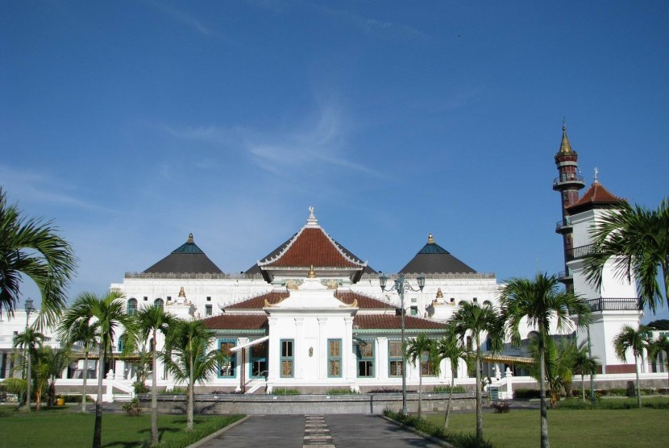
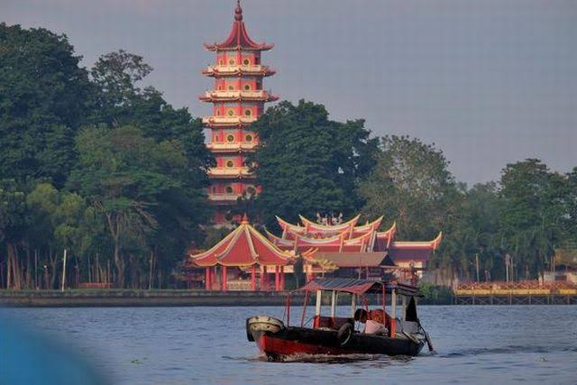

Destinasi Wisata Palembang
 Jembatan Ampera Ikon Kota Palembang yang membentang di atas Sungai Musi dan sangat indah saat malam hari. |
 Masjid Agung Palembang Masjid bersejarah peninggalan Kesultanan Palembang yang dibangun pada abad ke-18, dengan arsitektur perpaduan unsur lokal, Tionghoa, dan Eropa. |
 Pulau Kemaro Pulau di tengah Sungai Musi dengan pagoda sembilan tingkat dan klenteng yang terkait legenda cinta. |
© 2026 Palembang Bumi Sriwijaya. Semua hak dilindungi.
Dibuat oleh Muhamad Guntur Ramadhan | Universitas Muhammadiyah Bengkulu